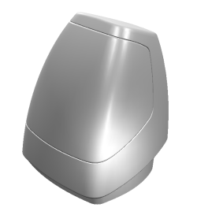
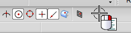
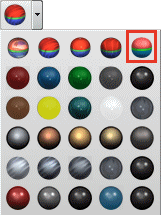
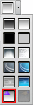

Create a shaded background
-
Open des07_true_shade_housing.

-
Right-click in a blank area of a toolbar and select True Shading.

The True Shading toolbar is displayed.
-
On the True Shading toolbar, click True Shading
 .
.
-
From the Global Materials Drop-down list, select Low Sheen Plastic Wash .


Notice the default grey background of the True Shading environment.
-
From the Background Drop-down list, select Inherit Shaded Background
 .
.

Notice that the background is inherited from your session outside of True Shading.
-
Click Show Shadows
 to disable shadows.
to disable shadows.

This makes the floor reflection easier to see.